Research Snippets
| Applied Algebraic
Topology |
|
Optimal
homologous cycles, total unimodularity, and
linear programming (SIAM
J. Computing, 2011, 40(4), 26–40.
Talk.
|
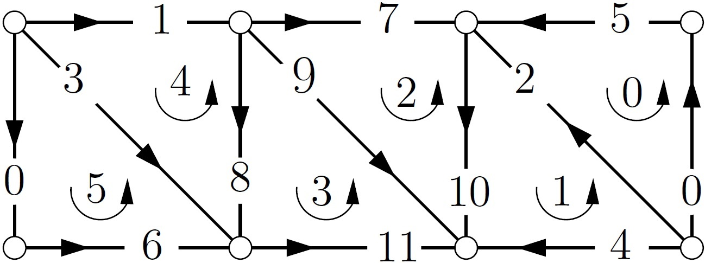
|
| |
Steinhaus
Filtration and Stable Paths in the Mapper
(SoCG
2025).
Talk video.
| |
|
Synopsis: We define a new filtration
called the Steinhaus filtration built
from a single cover based on a
generalization of Jaccard distance. We then
develop a language and theory for stable
paths within the Steinhaus filtration. This
framework can be applied to several
applications where a metric may not be
defined but a cover is readily available.
|
|
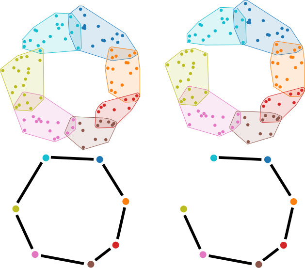
|
| |
| Geometric Measure Theory |
Flat norm
decomposition of integral currents
(Journal
of Computational Geometry, 7, 1, 2016,
285–307).
Talk.
|
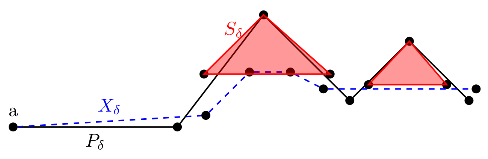
|
| |
The
Maximum Distance Problem and Minimal Spanning
Trees (Intl. J. Analysis
and Applications, 2021, 19, 5,
633–659).
Talk.
| |
|
Synopsis: We study a fat
generalization of the classical TSP where
we seek a shortest 1D curve (or a 1D set,
more generally) which when fattened by a
radius \(s\) covers a given 2D set. Given
a compact \(E \subset \mathbb{R}^n\) and
\(s>0\), the maximum distance problem
(MDP) seeks a compact and connected subset
of \(\mathbb{R}^n\) of smallest one
dimensional Hausdorff measure whose
\(s\)-neighborhood covers \(E\). For \(E
\subset \mathbb{R}^2\), we prove that
minimizing over minimum spanning trees
that connect the centers of balls of
radius \(s\), which cover \(E\), solves
the MDP.
|
|
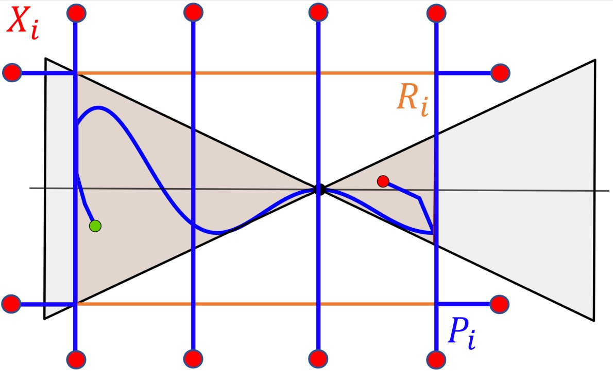
|
| |
| Mathematical Aspects of 3D
Printing |
Continuous
Toolpath Planning in a Graphical Framework for
Sparse Infill Additive Manufacturing
(Computer-Aided
Design, 127, Oct 2020, 102880).
Talk.
| |
|
Synopsis: We develop a new method to
generate continuous toolpaths with no
crossovers in sparse
infill 3D
printing. We define and use an Euler
Transformation of general polyhedral
complexes, which guarantees that every
vertex has an even degree in the graph of
the complex. Hence an Eulerian
tour that covers every edge exactly once
is guaranteed to exist. Our framework
handles most domains with complex
geometry/topology in layer-by-layer
printing. We validate our method on simple
and complex print domains.
|
|
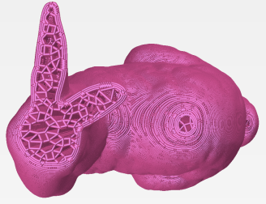
|
| |
SFCDecomp:
Multicriteria optimized tool path planning using
space-filling curves
(IJCGA,
31, 04, 2021, 193–220).
Talk.
| |
|
Synopsis: We explore efficient
optimization of toolpaths based on multiple
criteria for large instances of dense
infill 3D
printing prolems. We develop
SFCDecomp, a space filling curve
based decomposition framework to solve
large instances of 3D printing problems
efficiently by solving these optimization
subproblems independently. Strength
testing of a tensile test specimen printed
with tool paths that maximize or minimize
adjacent layer edge overlaps reveal
significant differences in tensile
strength between the two classes of
prints.
|
|
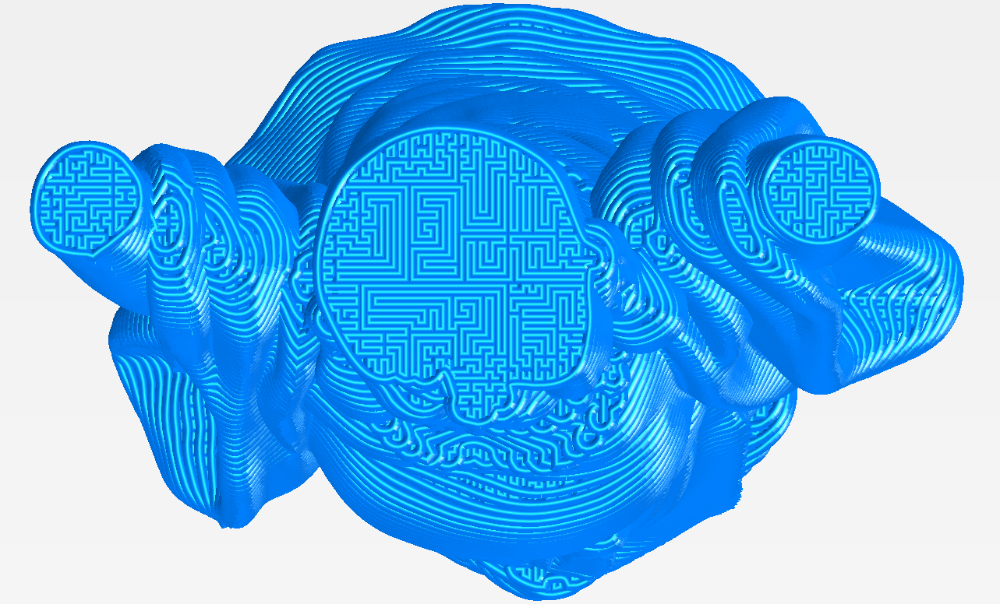
|
| |
| Lattice Problems and Integer
Optimization |
Column
basis reduction, and decomposable knapsack
problems (Discrete
Optimization, 2009, 6(3),
242–270). Instances. Talk.
| |
|
Synopsis: We propose a very simple
preconditioning method called rangespace
reformulation for integer programming
feasibility problems: replacing the problem
\(\{ \mathbf{b}' \leq A \mathbf{x} \leq
\mathbf{b}, \mathbf{x} \in \mathbb{Z}^n
\}\,\) with \(\,\{\mathbf{b}' \leq AU
\mathbf{y} \leq \mathbf{b}, \mathbf{y} \in
\mathbb{Z}^n\}\), where \(U\) is a
unimodular matrix computed via basis
reduction, to make the columns of \(AU\)
short and nearly orthogonal. We also study a
family of IP instances called decomposable
knapsack problems (DKPs), which are knapsack
problems with a constraint vector of the
form \(\mathbf{p}M + \mathbf{r}\) with \(M
\gg 0\). We prove (i) hardness results for
branch-and-bound branching on individual
variables of the DKPs; (ii) that they are
easy, if one branches on the constraint
\(\mathbf{p}^T\mathbf{x}\) instead; and
(iii) that branching on the last few
variables in the rangespace reformulation is
equivalent to branching on
\(\mathbf{p}^T\mathbf{x}\).
|
|
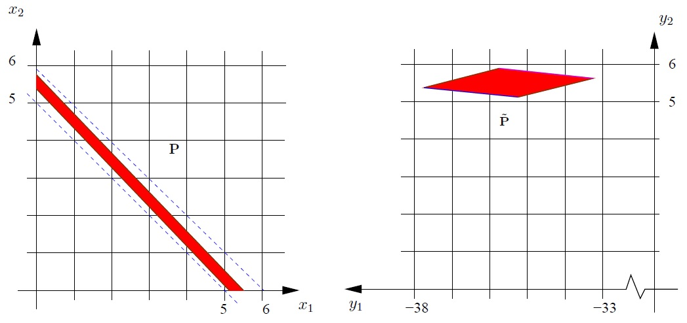
|
| |
Lattice-based
Algorithms for Number Partitioning in the Hard
Phase (Discrete
Optimization, 2012, 9(3),
159–171).
Talk.
| |
|
Synopsis: The number partitioning
problem (NPP) is to divide
\(\{a_1,...,a_n\}\) into two disjoint
subsets such that the difference between
the two subset sums - the discrepancy,
\(\Delta\), is minimized. With \(a_j\)s
chosen uniformly from \([1,R]\), \(R >
2^n\) gives the hard phase, when there are
no equal partitions with high
probability. We reduce NPP in the hard
phase to the closest vector problem
(CVP). We can solve the original problems
by making polynomial numbers of calls to a
CVP oracle. In practice, we implement a
heuristic which applies basis reduction
(BR) to several CVP instances. We also
propose a truncated NPP algorithm, which
finds approximate minimum discrepancies
for instances on which the BR approach is
not effective.
|
|
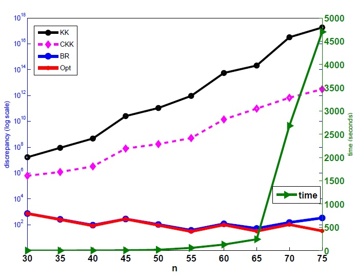
|
| |
| Computational
Biology |
Four-body
scoring function for mutagenesis
(Bioinformatics,
2007, 23(22), 3009–3015).
Overview
talk.
| |
| Synopsis: We develop a Delaunay
tessellation-based four-body scoring
function to predict the effects of single
and multiple residue mutations on the
stability and reactivity of proteins. We
also develop an efficient method for
screening huge numbers of mutants of a
protein, called combinatorial
mutagenesis. In one study, 64 million
mutants of the protein 1CSQ, with six of its
residues being changed to all possible (20)
amino acids, were screened within a few
hours on a PC, and all five stabilizing
mutants reported were correctly identified
as stabilizing by combinatorial
mutagenesis. |
|
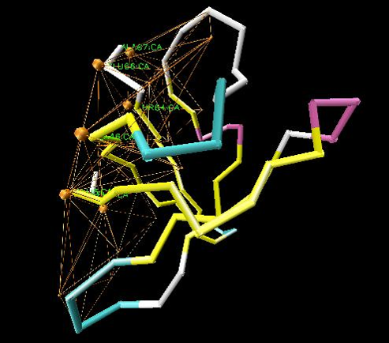
|
| |
Topological
features in cancer gene expression data
(in PSB 2015, 20,
108–119).
Talk.
| |
|
Synopsis: We develop a new method
using topological
persistence to analyze cancer gene
expression datasets. We circumvent the
problem of high dimensionality by
dualizing the data, i.e., by
studying genes as points in the sample
space. We identify a small relevant subset
from tens of thousands of genes while
simultaneously identifying nontrivial
higher order topological features, i.e.,
holes, in the data.
|
|
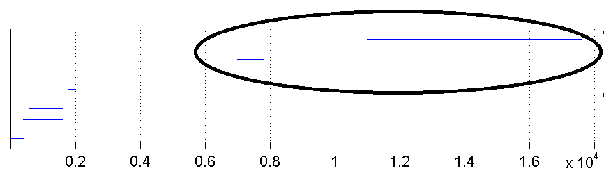
|
| |
| Biomedical
Applications |
Neck muscle
paths and moment arms are significantly affected
by wrapping surface parameters
(Comp. Met. Biomech. Biomed. Engg,
2012, 15(7), 735–744).
| |
|
Synopsis: We studied the effects of
wrapping surfaces on muscle paths and moment
arms of the neck muscle, semispinalis
capitis. Sensitivities to wrapping surface
size and the kinematic linkage to vertebral
segments were evaluated. Kinematic linkage,
but not radius, significantly affected the
accuracy of model muscle paths compared to
centroid paths from images. Both radius and
linkage affected the moment arm
significantly. This study highlights the
sensitivity of moment arms to wrapping
surface parameters and the importance of
including multiple postures when evaluating
muscle paths and moment arm.
|
|
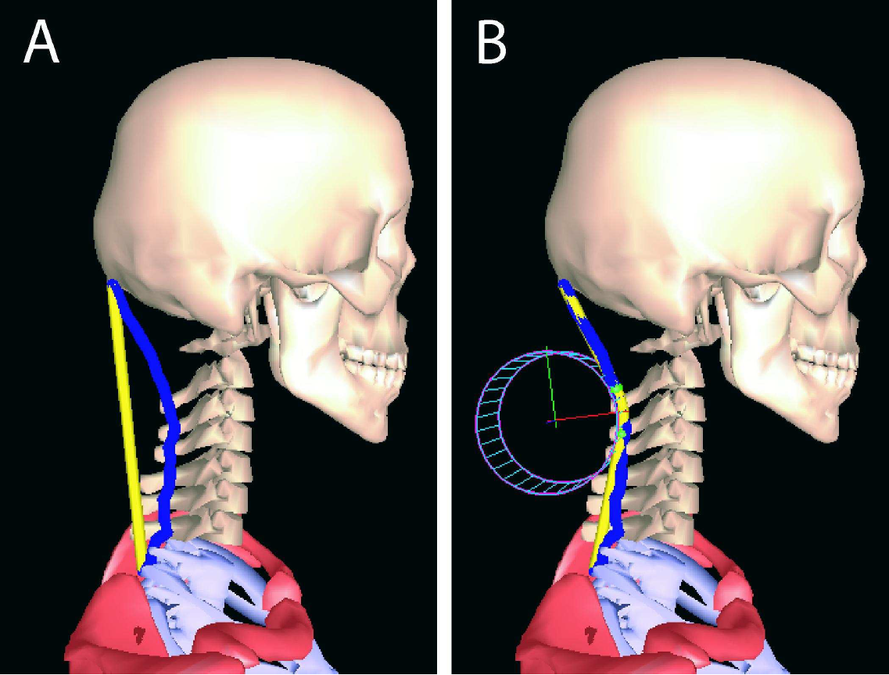
|
| |
A visual
analytics framework for analysis of patient
trajectories (In ACM BCB, 2019).
| |
|
Synopsis: A new visual analytics
approach to analyze hospital patient
trajectories in a scalable manner. We view
the problem as one of structure discovery
and tracking how structure evolves with time
over the course of patients' stay at the
hospital(s). Our approach helps to delineate
subpopulations (i.e., subgroups of patients)
that show divergent behavior. Initial
results on a large data set from the Duke
Antimicrobial Stewardship Outreach Network
(DASON)
database.
|
|
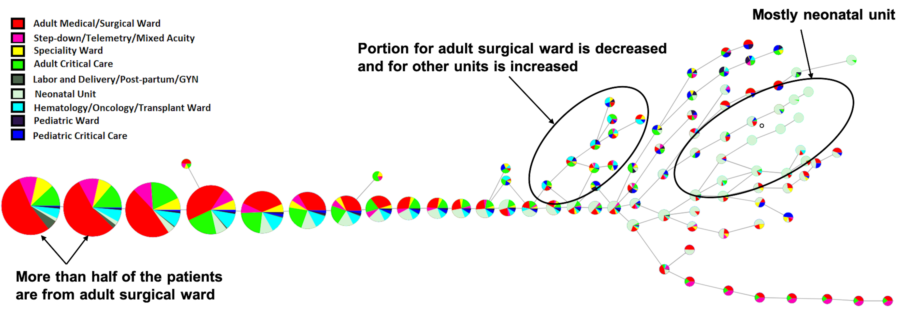
|
| |
| |
Events (Conferences, Workshops, etc.)
CG Week
2025, Kanazawa, Jun 23–27, 2025.
CG
Week 2024, Athens, Jun 10–14, 2024.
Cascade
RAIN Math Meeting, Portland, Apr 27, 2024.
Jon-Shmuel
Halfway to Twelfty, Paris, Jul 4–7, 2023.
CG Week 2023,
UT Dallas, Jun 12–16, 2023.
SIAM
Conference on Mathematics of Data Science (MDS22),
San Diego, Sep 26–30, 2022.
SIAM
Conference on Discrete Mathematics (DM22), CMU, Jun
14–16, 2022.
SIAM PNW
21, WSU Vancouver, May 20–22, 2022.
JMM
2022, Online, Apr 6–9, 2022.
IMSI
Workshop on The Mathematics of Soft Matter, Online,
Feb 28–Mar 4, 2022.
Computational
Persistence Workshop, Online, Nov 1–5,
2021.
JMM
2021, Online, Jan 2021.
SPM 2020, Online, June 2020.
WCOM Fall 2019, UBC, Vancouver, Sep 28, 2019.
CG Week 2019,
Portland, OR, June 2019.
Optimization
Methods in Vision and Image Processing,
ICERM, Apr 29–May 3, 2019.
CGWeek
and SoCG, Budapest, Hungary, June 2018.
Joint
Mathematics Meetings, 2018, San Diego, CA.
SIAM PNW
Biennial Meeting, Corvallis, OR, Oct 27-29,
2017.
SIAM
Conference on Applied Algebraic Geometry, Atlanta,
Jul 31-Aug 4, 2017.
AMS
Spring Western Sectional Meeting (Special
sessions: 1, 2, 3),
Pullman, Apr 22-23, 2017.
Workshop
on Topological Data Analysis in
Biomedicine in ACM-BCB 2016.
Joint
Mathematics Meetings (Special
sessions 1
and 2),
Seattle, Jan 6-9, 2016.
Workshop on Abstract
Algebra and Algebraic Topology in
Biomedicine in PSB
2016, Hawaii, Jan 4, 2016.
Mathematics
in Data Science, ICERM, Jul 28-30, 2015.
International
Symposium on Mathematical programming (ISMP),
July 12-17, 2015.
Topology
and Geometry of Networks and Discrete Metric
Spaces, IMA, Apr 28-May 2, 2014.
Topological
Systems: Communication, Sensing, and Actuation,
IMA, Mar 3-7, 2014.
Topological
Structures in Computational Biology, IMA, Dec
9-13, 2013.
Modern
Applications of Homology and Cohomology, IMA, Oct
28-Nov 1, 2013.
Topological
Data Analysis, IMA, Oct 7-11, 2013.
Modern
Trends in Optimization Reunion II, IPAM, June
2013.
ASCR/BES
Data Workshop, Bethesda, MD, Oct 24-25, 2011.
Applied
Mathematics and Image Processing Summer Workshop
at UTPA, May 31-Jun 1, 2011.
Modern
Trends in Optimization and Its Application at
IPAM, Sep 13-Dec 17, 2010.
STOC
2010
IMA
short course on Applied Algebraic Topology, June
15-26, 2009.
AMS
Spring Western Section Meeting 09
|